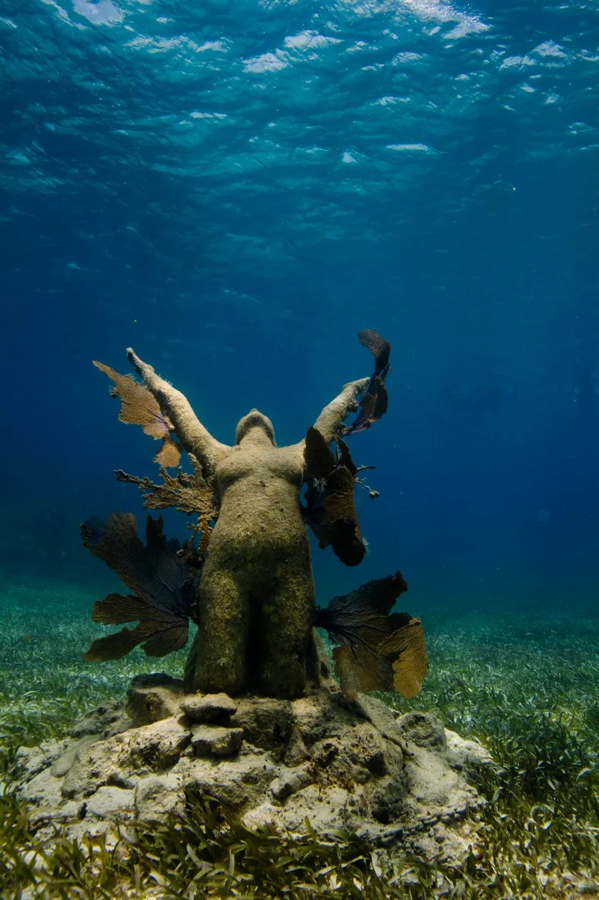

Le MUSA n'est pas un endroit comme les autres, il s'agit du plus grand musée sous-marin du monde. Installé dans les profondeurs au large de Cancun au Mexique, il a été créé en 2009 par le sculpteur Jason deCaires Taylor et le directeur du parc aquatique de la ville, Jaime Gonzalez Canto.
visiter un musée, ça n'a rien d'extraordinaire, sauf quand vous avez besoin d'un masque et d'une bouteille de plongée pour vous rendre ! Le MUSA n'est pas un endroit comme les autres, il s'agit du plus grand musée sous-marin du monde. Installé dans les profondeurs au large de Cancun au Mexique, il a été créé en 2009 par le sculpteur Jason deCaires Taylor et le directeur du parc aquatique de la ville, Jaime Gonzalez Canto. Depuis, le musée a accueilli de nouvelles pièces et abritent désormais pas moins de 500 sculptures réparties en trois galeries. Les œuvres mettent en scène des humains dans des situations variées. Avec ce projet, Jaime Gonzalez Canto a voulu attirer l'attention du public sur les dommages provoqués aux récifs coralliens par l'activité humaine. Ces sculptures ont été créées dans un matériau spécifique, leur permettant de faire office de récif artificiel que les créatures marines peuvent coloniser. D'ailleurs, après à peine quelques mois passés sous l'eau, la plupart des sculptures ont déjà été recouvertes des végétaux sous-marins. Chaque année, plus de 100.000 visiteurs plongent pour contempler ces œuvres sous-marines.
Sous la surface de l’océan, le musée d’art contemporain de Cancún (MUSA) déroute les touristes. Depuis onze ans, le plus grand musée subaquatique du monde a pour vocation d’attirer les plongeurs loin du véritable récif corallien. Un idéal environnemental donc, au-delà de son originalité. Une fausse voiture coccinelle abritant des bancs de poissons dorés, une femme aux cheveux d’algues qui ondulent délicatement dans l’océan, une ronde d’hommes aux visages crispés se tenant la main : les fonds marins au large de Cancún débordent de surprises. Depuis novembre 2009, les visiteurs de Cancún, pointe au sud-est du Mexique, peuvent s’aventurer en bateau à fond transparent ou avec masque et tuba dans le musée d’art contemporain sous-marin (MUSA). Entre quatre et dix mètres de profondeur, s’étendent trois galeries d’art, la plus grande comportant 450 sculptures.
Éric Taladoire suppose que cette salle sous-marine consacrée à la civilisation maya répond à une curiosité des touristes au Mexique, qui associent pour beaucoup, à tort précise l’historien, les civilisations mexicaines et mayas. En effet, selon Julieta Anzaldo Lopez, administratrice du MUSA, les visiteurs sont majoritairement des touristes, venant des quatre coins du monde. Les recettes du musée, en moyenne autour d’un million de pesos mexicains par an, précise l’administratrice, sont utilisées à 30% pour l’administration du musée et les 70% restants sont reversés à une association pour la défense des récifs naturels. Pascale Joannot est enthousiaste vis-à-vis de notre capacité à préserver les trésors de nos océans et réagit à une sculpture de Jason deCaires Taylor, de cinq mètres de haut et de plus de soixante tonnes, représentant une petite fille qui porte l’océan
Cette Atlantide, pensée par le directeur du parc national de la côte occidentale mexicaine regroupant l’île Mujeres, Punta Cancun et Punta Nizuc, a été réalisée grâce au sculpteur britannique Jason deCaires Taylor, coutumier des fonds marins. A l’origine, Jaime Gonzalez Canto, directeur du parc national, souhaitait renforcer l’attractivité du récif corallien de Cancún en y immergeant des sculptures colossales. C’est en apprenant que le récif corallien à l’est du Mexique est l’un des plus pollués et des plus abîmés qu’il révise son projet. Avec le partenariat de Jason deCaires Taylor, il décide de placer leurs galeries d’art à l’écart du récif, dans les fonds blancs, afin d’attirer les touristes dans une zone moins menacée. Le musée a nécessité dix-huit mois d’installation, 120 tonnes de béton, de sable et de gravier, et 120 heures de travail sous-marin pour ses sculpteurs et ses ouvriers. Des sculptures sont régulièrement ajoutées au sein de ces galeries afin de préserver leur intérêt auprès des touristes réguliers. En plus de détourner les plongeurs du récif en danger, les statues en ciment alcalin, un matériau au pH neutre, permettent à l’écosystème sous-marin de se développer. Les poissons ont colonisé les œuvres pouvant former des abris et les algues ont envahi les statues, créant aux formes humaines des cheveux, des vêtements ou des sortes de branchies.
DECOUVRER_le_PLUS_GRAND_SOUMARRIN_AU_MONDE